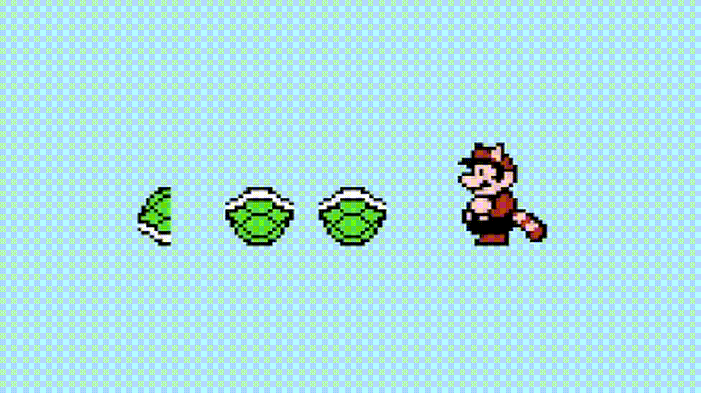
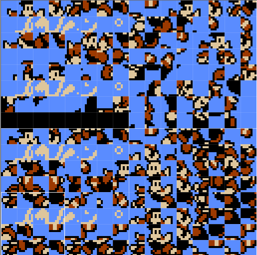
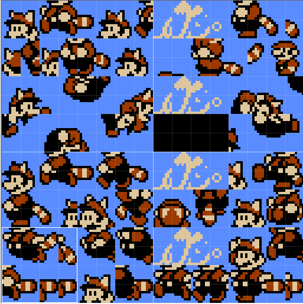
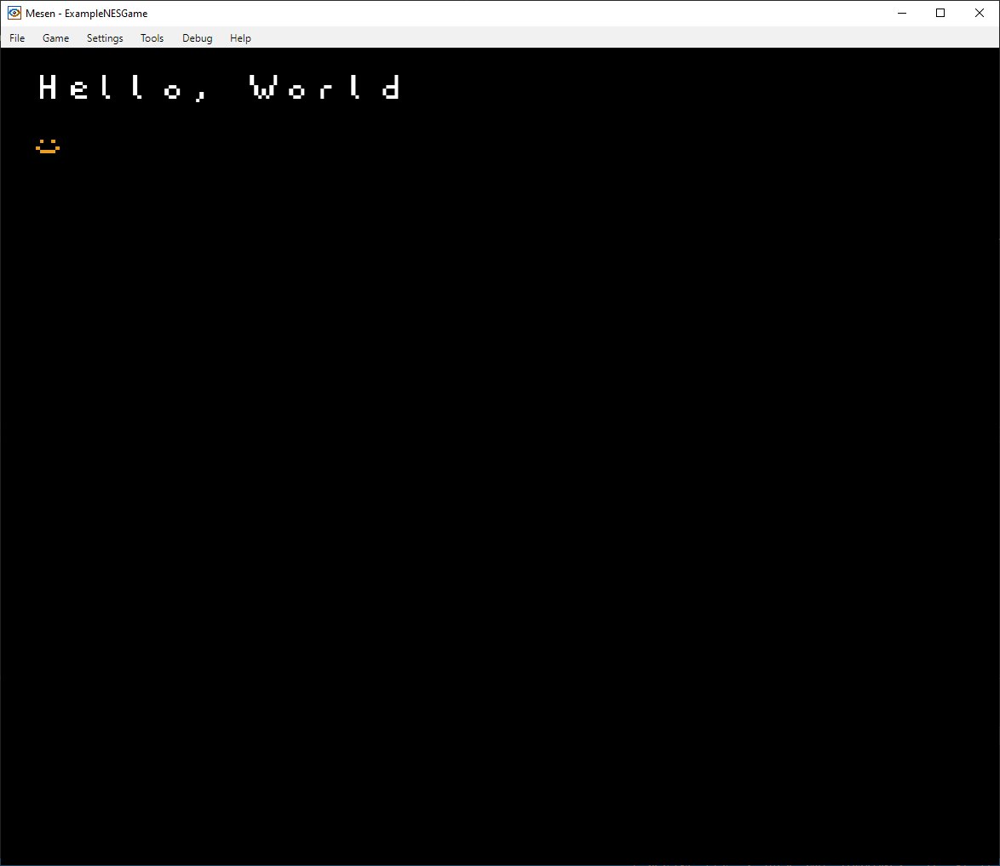
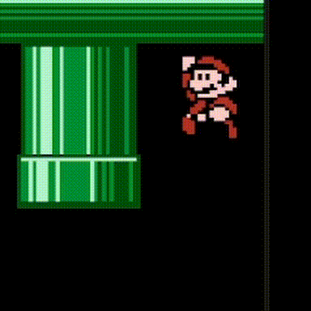

Now, with only background tiles, moving something across the screen isn't that easy. You could only move 8 pixels at a time, and attributes would be an issue.
With sprites, this becomes much easier.
The NES has OAM RAM for 64 sprites. OAM means Object Attribute Memory, and sprites are technically referred to as objects. This guide will refer to them as sprites,
though.
Despite the capacity for 64 sprites, the NES can only display 8 sprites per scanline. If there are more sprites, the extra sprites won't render. Sprites earlier in OAM RAM have priority over sprites later in OAM RAM, and this affects both sprites on top of each other as well as more than 8 sprites per scanline.
If you keep running into the issue of sprite overflow, you can use a flickering effect, such as the one in the image above.
Unlike background tiles, sprites can be either 8x8 or 8x16 pixels in size, toggled by a bit in PPU Control ($2000). When in 8x8 mode, indexing works the same as
background tiles. In 8x16 mode, sprites can access both CHR-ROM tables ($0000 and $1000) based on whether the tile index is even or odd.
These are the tiles each sprite index would access:
And here is one of Super Mario Bros. 3's CHR-ROM tables, not arranged and arranged for 8x16 tiles:
 The sprite mode is determined by bit 5 (bit "H" below) in PPU Control ($2000).
$2000: PPU Control
VPHB SINN
|||| ||++-- Base nametable address (0 = $2000; 1 = $2400; 2 = $2800; 3 = $2c00)
|||| |+---- VRAM address increment per CPU read/write of PPU Data (0: add 1, going across; 1: add 32, going down)
|||| +----- Sprite pattern table address for 8x8 sprites (0: $0000; 1: $1000)
|||+------- Background pattern table address (0: $1000; 1: $1000)
||+-------- Sprite size (0: 8x8; 1: 8x16)
|+--------- PPU master/slave select (0: read backdrop from EXT pins; 1: output color on EXT pins)
+---------- Generate an NMI at the start of the vertical blanking interval (0: off; 1: on)
While a background tile uses 1 byte, a sprite uses 4 bytes.
Byte 1: Y Position
Byte 2: Tile Index
Byte 3: Attributes
Byte 4: X Position
The Y Position, Tile Index, and X Position bytes are self-explanatory. The attribute byte contains more than just the palette, and below is a description of it.
Sprite Attribute Byte
VHB---PP
||| ++-- Palette index
||+------- Background Priorty (0: render on top of background, 1: render behind background)
|+-------- Horizontal Flip
+--------- Vertical Flip
To add a sprite to OAM RAM, you can use the OAM Address ($2003) and OAM Data ($2004) registers. This bit of code writes a single sprite to the screen near the top left corner, below the "Hello, World!" written with background tiles. WARNING: Sprite code needs to be written during vBlank / NMI, since OAM RAM can decay after a vBlank without writes.
lda #0
sta OamAddr_2003
lda #24
sta OamData_2004
lda #0
sta OamData_2004
sta OamData_2004
lda #8
sta OamData_2004

To disable/hide a sprite, you can simply set the Y position to be greater than 240. Since this is in vBlank, they won't render.
You may have noticed that in the first image, there are solid rectangle sprites below the Piranha Plant. You might have wondered what this was for.
Here's the explanation: To hide the Piranha Plant behind the pipe when it is moving up or down, it is covered by a higher-priorty sprite (earlier in
OAM RAM) that has the Background Priorty bit set, so that it renders behind the pipe. Since the Background Priorty sprite has priority, it covers the
Piranha Plant's sprites as they go inside the pipe.
Mario has a similar system to hide him when going in pipes, and it can be seen when performing the pipe glitch:
